Under sista veckan av augusti och in på första veckan av september så var jag i Tokyo! Det var första gången jag var i Japan och det var en helt fantastisk resa. Jag tog massor med bilder, så här har jag gjort ett galleri med hjälp av JavaScript för att visa ett litet urval av bilderna. Vid klick på miniatyrerna förstoras dem och visar en kort bildtext.
När jag byggde upp den här sidan har jag använt ett NPM plugin som heter Gulp Imagemin som automatiskt komprimerar filstorleken på bilder.
 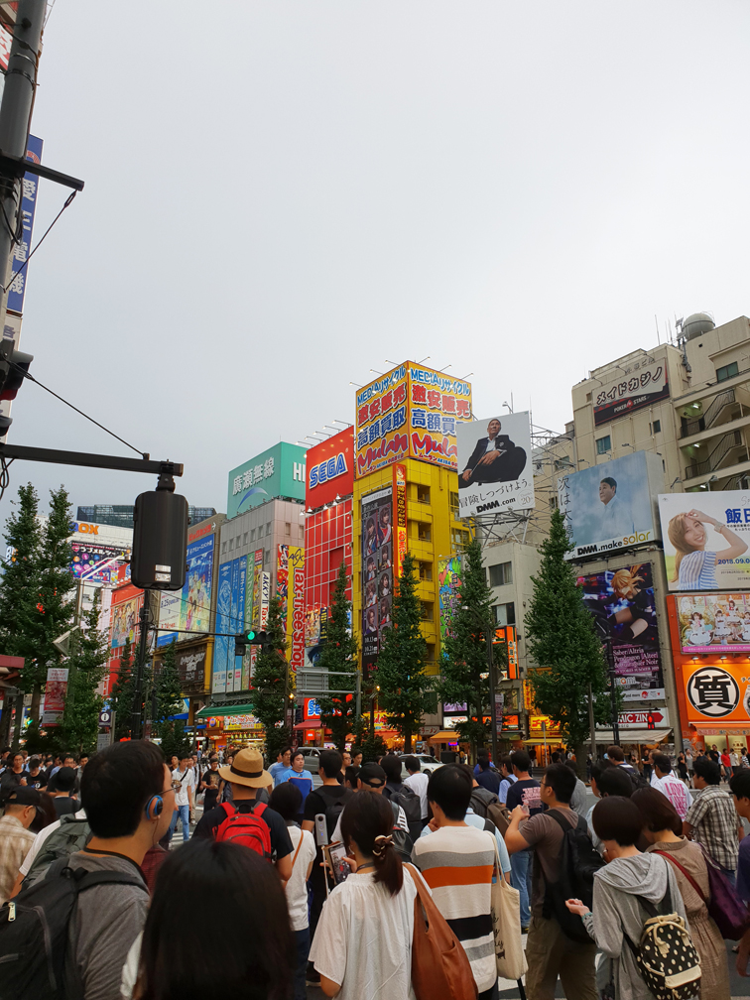
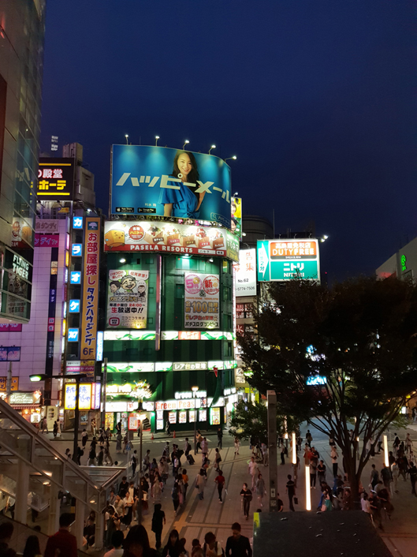
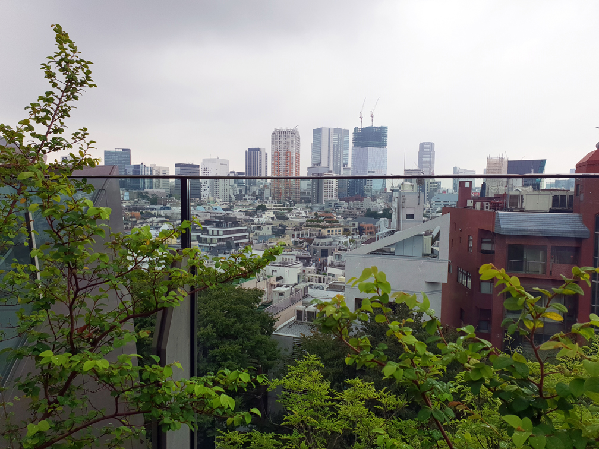
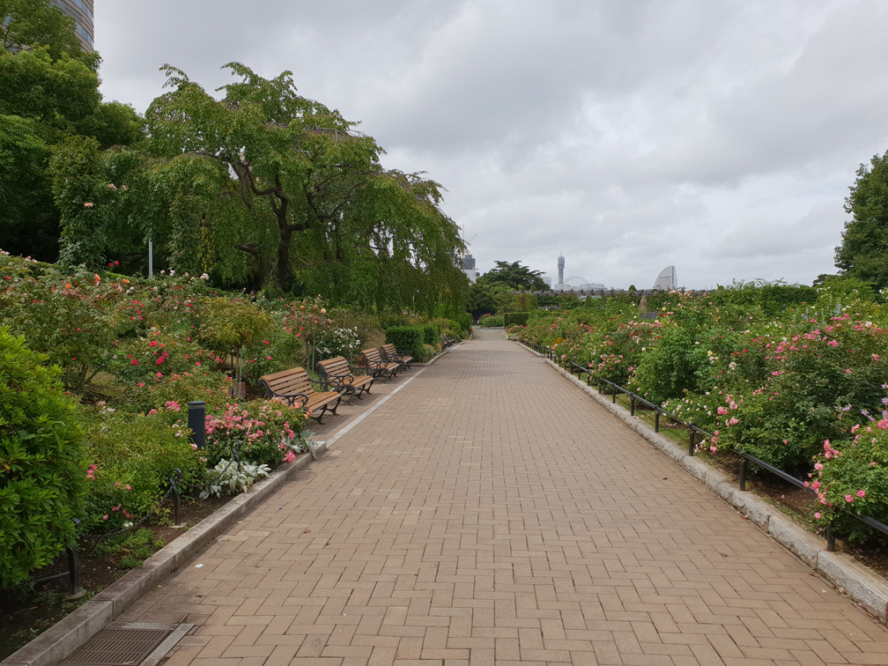
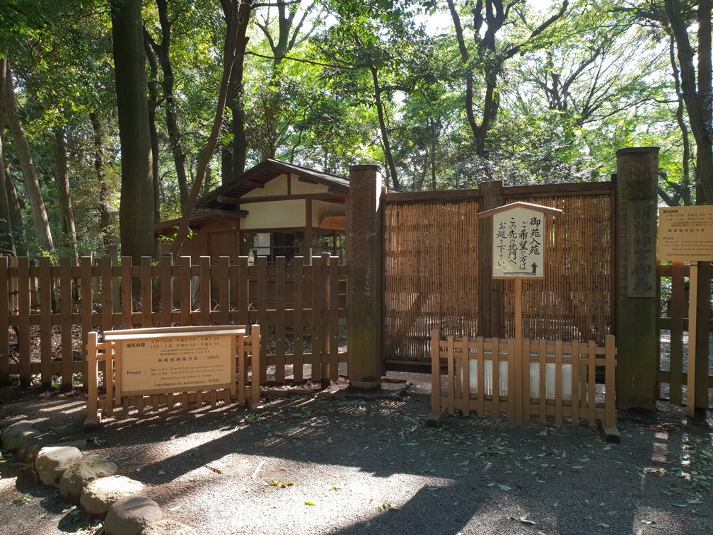
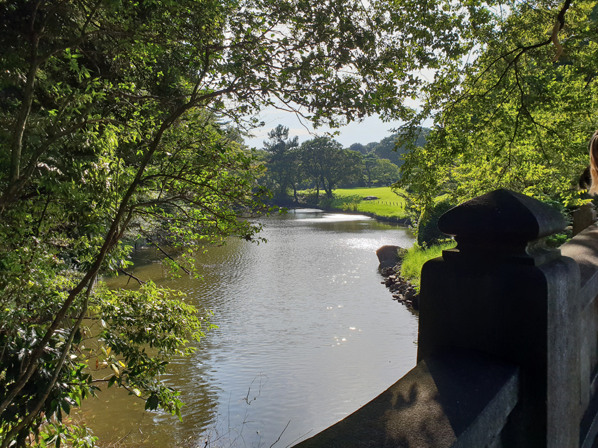
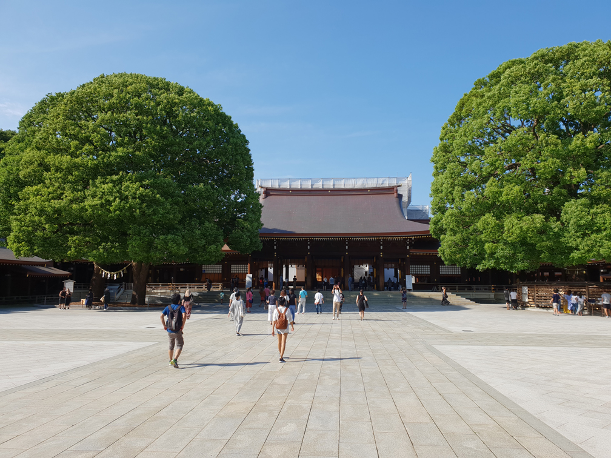
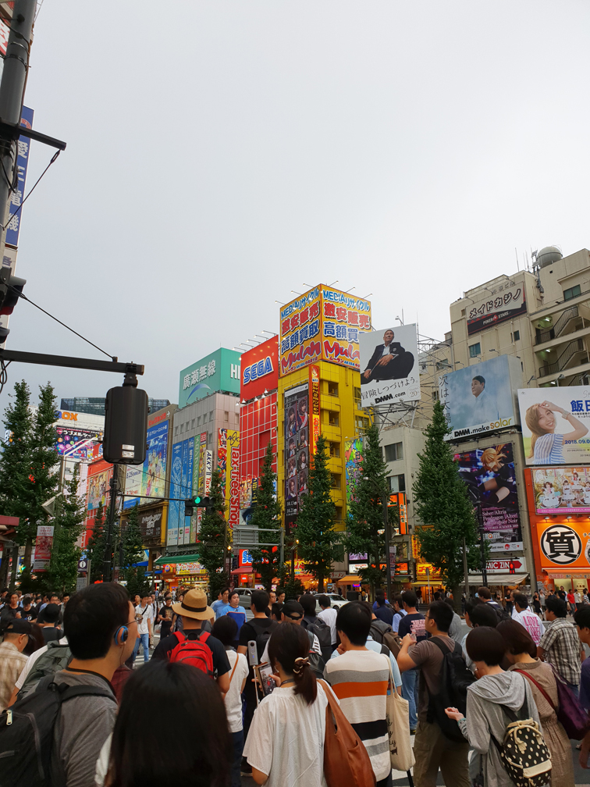
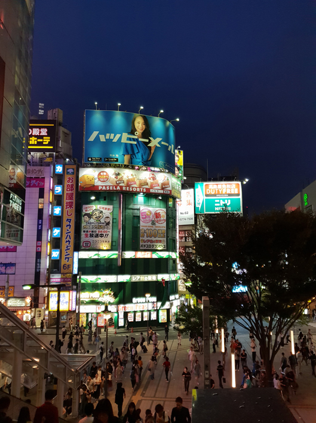
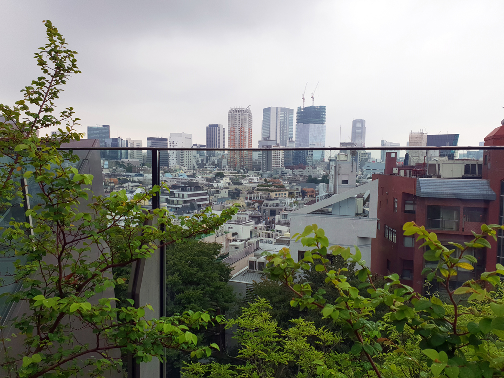
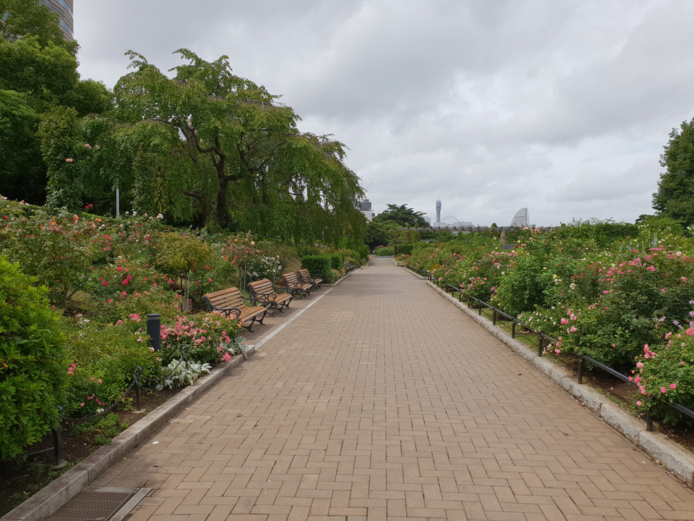
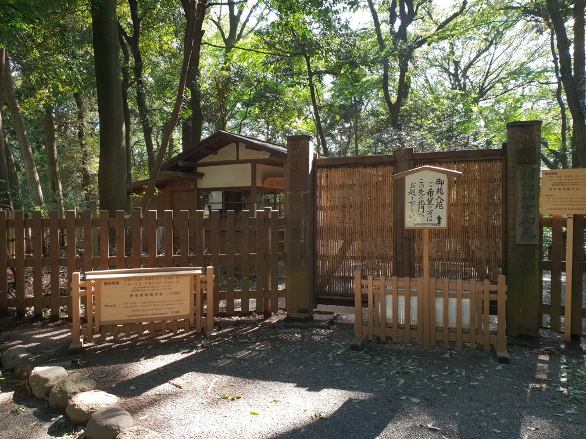
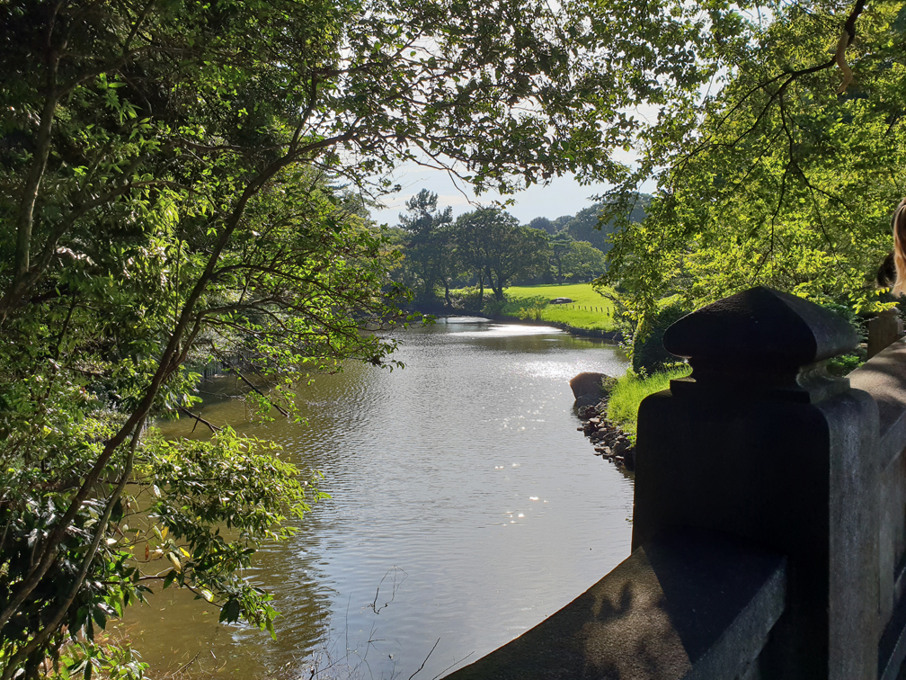
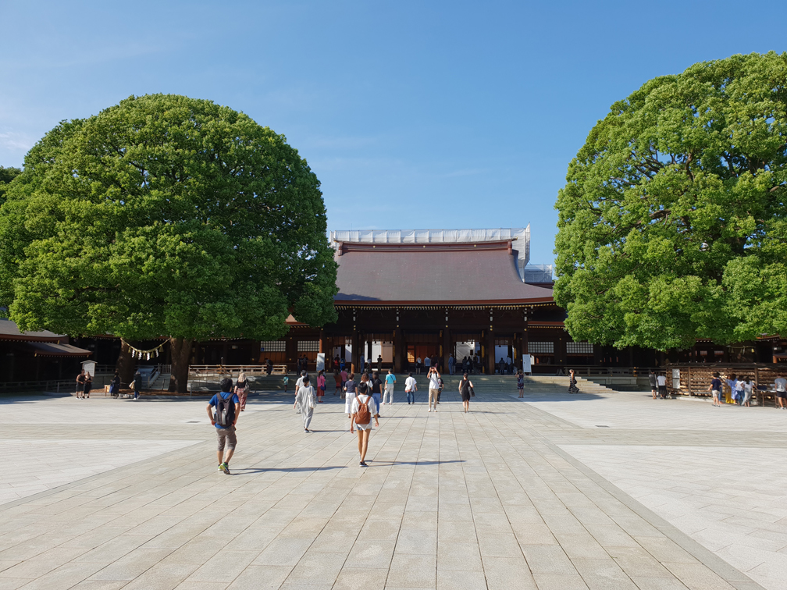